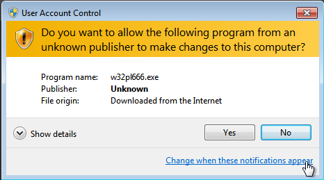

Installation
This document should guide you through the process of installing SWI-Prolog and starting on your homework assignment. SWI-Prolog is a free and open source Prolog implementation. There are other Prolog implementations available, but I have chosen to use this one as it should provide a consistent user experience across all platforms that does not require mastery of the command line.
Jump to the section for your operating system:
Installing on Windows
This section will guide you through installation of SWI-Prolog on a recent OS X system. This has been tested with Windows 7 Professional, but should apply for any Windows computer running Windows XP, 7, or 8.
Step 1. Download SWI-Prolog
From the SWI-Prolog stable version download page, download the Windows installer file for the latest stable release of SWI-Prolog. Note that there are two versions available for Windows: 32-bit and 64-bit. You can use either one, but I recommend the 32-bit version.
Step 2. Install SWI-Prolog
Once it has finished downloading, you can run the installer. You may encounter the following dialogue, where you can just click Yes.

Work your way through the wizard. I recommend installing accepting all of the default settings. Once installation is complete, you should be able to see SWI-Prolog in your start menu.
{kind=link}
Step 3. Run SWI-Prolog
If you run SWI-Prolog, you should now see the following window.
{kind=link}
If you see this, you can now progress to Getting to know SWI-Prolog.
Installing on OS X
This section will guide you through installation of SWI-Prolog on a recent OS X system. This has been tested with a fresh install of Yosemite 10.10.2.
|
Note
|
It is also possible to install SWI-Prolog using homebrew. However, this will not install the GUI. Nonetheless, if you want to opt for this route, feel free to give it a go. |
Step 1: Download XQuartz
XQuartz is an implementation of the X Window System that runs on OS X. This is
used by SWI-Prolog to provide various graphical development tools. To download
XQuartz, go to its homepage and
download dmg file for the latest version.
Step 2. Install XQuartz
Once it is downloaded, you can find it in your Downloads folder and click on it. You should be presented with a window similar to the following:
{kind=link}
Double-clicking on the XQuartz pkg icon will start the installation process.
The first screen you see should look like:
{kind=link}
Just click your way through the wizard and enter your password when prompted. You will be told that you will need to log out and log back in, and in the end the installation should succeed:
{kind=link}
You can now close both windows and eject the XQuartz installation image.
{kind=link}
Finally, go ahead and log out and log back in. Once you log back in, XQuartz should be fully configured for you.
Step 3: Download and install SWI-Prolog
Next, from the SWI-Prolog stable
version download page, download the dmg file for the latest stable release
of SWI-Prolog and open it. You should be presented with a window similar to
the following:
{kind=link}
Click on the Applications icon to open the applications folder, and then drag the SWI-Prolog icon to the applications folder. This will install SWI-Prolog. Once installation completes, you can close the windows and eject the installation image.
Step 4: Run SWI-Prolog
You should now try to run SWI-Prolog. If you see the windows and menus as in the below image, you have successfully installed SWI-Prolog.
{kind=link}
If you see this, you can now progress to Getting to know SWI-Prolog.
Installing on Linux
The specifics of installing on particular Linux distributions is really beyond
the scope of this document. If you are using Linux, I trust that you know how
to install software for your distribution. In general, you will be wanting to
install an swi-prolog package.
This page has some additional
details on how to install for a few distributions.
Getting to know SWI-Prolog
This section should guide you through the basics of using SWI-Prolog and should prepare you for your first Prolog assignment.
Performing basic queries
Once you have started SWI-Prolog, you will be in a window with a prompt ?-.
This prompt allows you to perform queries on the current database. For
example, you can ask: does a unify with a by typing =(a, a).? An
alternative way of asking the same question is the more natural a = a..
a unify with a??- =(a, a).
true.
?- a = a.
true.
?-This is a very basic query. You can also try performing queries with numbers and using functors. Try the following:
-
1 = 2. -
a = 1. -
a = 'a'. -
foo(a) = foo('a'). -
foo(1) = bar(1). -
'hello there' = hello_there
Now you can try mixing in a variable. For example, you can ask, ‘what unifies
with a?’ using either a = X. or X = a.
a??- a = X.
X = a.
?- X = a.
X = a.
?-Now try the following unifications using variables:
-
1 = X. -
foo(X) = foo(a). -
foo(X) = a. -
foo(X) = foo(Y).
Creating a database of facts
Up until now, you have only been able to perform queries that only rely on what
you provide during the query itself. How do you add facts that you can query?
If you try to add a fact from the current window, you will get an error. For
example, what happens if you try to state father(joe, jake).?
father(joe, jake).?- father(joe, jake).
ERROR: toplevel: Undefined procedure: father/2 (DWIM could not correct goal)
?-This is telling your that Prolog does not know anything about father. How do
you teach it? SWI-Prolog requires you to load the facts from a file. Download
facts.pl to your computer. This is a Prolog source file that
is contains a comment and the fact father(joe, jake).. Quit Prolog and
restart it by opening your copy of facts.pl. This will start SWI-Prolog
using the directory of facts.pl as the working directory. On Windows, this
should also load database.
|
Note
|
Since ‘pl’ is the same extension that is commonly used for Perl files, you may need to right-click on the file and tell your operating system to open the file with SWI-Prolog. |
Once SWI-Prolog has started, you can be sure that the database is loaded by
typing in [facts]. This is short-hand for consult(facts), which will look
for and load the file called facts.pl. You should see output similar to the
following:
?- [facts].
% facts compiled 0.00 sec, 2 clauses
true.
?-Now, we should be able to perform a few queries:
?- father(joe, jake).
true.
?- father(jake, joe).
false.
?- father(X, jake).
X = joe.
?- father(jake, X).
false.
?- father(X, Y).
X = joe,
Y = jake.
?-Well, this is all fine and good, but the database only contains one fact. How
can you add more? You could edit the file facts.pl outside of SWI-Prolog and
reload it using [facts].. However, SWI-Prolog comes with a handy way of
doing all of this. At the prompt, just type edit.. This will bring up the
PceEmacs editor with the facts.pl file loaded.
{kind=link}
Now, you can edit the file within this editor, which provides some syntax highlighting and basic static analysis.
|
Note
|
If you prefer to use some other editor, feel free to consult the page on selecting an editor in the SWI-Prolog reference. |
Now you can add a few more facts. Try adding the following:
father(jake, joan).
mother(jane, jake).Once you have typed these in, save the file using the Save buffer command
from the File menu. Now, you can go back to SWI-Prolog and load the
changes using make..
?- make.
% /Users/dan/comp3320/homework03/doc/facts compiled 0.00 sec, 4 clauses
true.
?-Now, you can successfully query the updated database.
- father(joe, jake).
true.
?- father(jake, joe).
false.
?- mother(X, jake).
X = jane.You can also try a query like father(X, Y)., which lists all of the fathers
in the database. You will notice that when you run that query it will pause
after the first result without returning to the ?- prompt. This means there
is more than one result. You can press ; to get an additional result or
press . to terminate.
At this point, you should have what you need to get started with your homework assignment.
Getting help
It is possible to open up the SWI-Prolog manual by issuing help. or
help(Topic). at the ?- prompt where Topic is an atom to look up.
Additional resources
To help you understand Prolog better, there are a number of resources which may be of interest to you:
- Learning Prolog
-
-
Learn Prolog Now! is a fairly accessible introduction to Prolog. This does not cover predicate logic, but covers the language itself well.
-
Chapter 16 from Concepts of Programming Languages provides an introduction to predicate logic, logic programming, and Prolog in particular.
-
- About SWI-Prolog
-
-
The SWI-Prolog reference manual contains some introductory material as well as a complete reference for the development tools and library.
-
The SWI-Prolog FAQ might be useful if you happen to have a frequently-asked question that is answered.
-
Last, SWI-Prolog maintains a page with links to external resources covering topics ranging from introductory to adavanced.